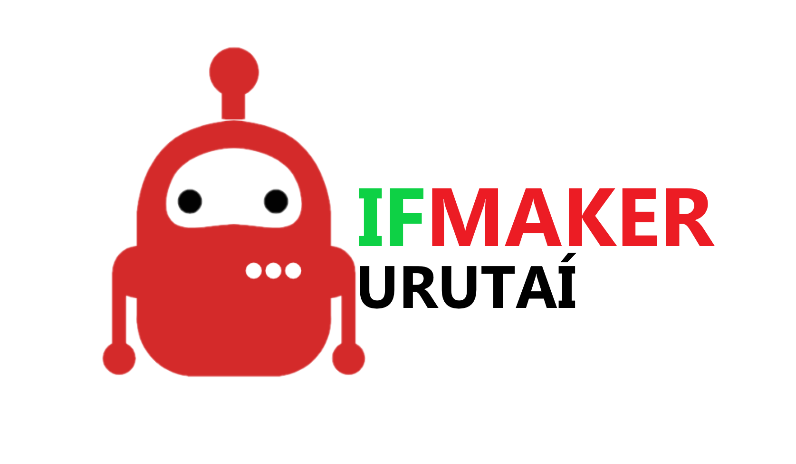

<div class="content_toolbar">
    
    <ul class="menu_toolbar">
        <a href=""><li>Projetos</li></a>
        <a href=""><li>Membros</li></a>
        <a href=""><li>Sobre</li></a>
        <a href=""><li>Login</li></a>
    </ul>

    <button id="menu_toolbar_mobile" mat-button [matMenuTriggerFor]="menu"> 
        <mat-icon aria-hidden="false" aria-label="Menu" fontIcon="menu">
    </mat-icon>
    </button>
    <mat-menu #menu="matMenu">
        <button mat-menu-item> <a href="">Projetos</a></button>
        <button mat-menu-item> <a href="">Membros</a></button>
        <button mat-menu-item> <a href="">Sobre</a></button>
        <button mat-menu-item> <a href="">Login</a></button>
    </mat-menu>
</div>